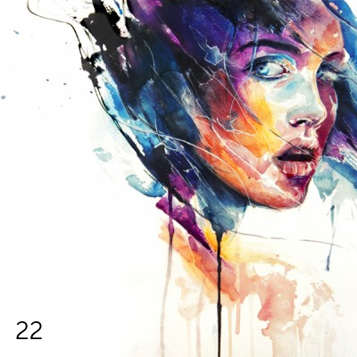

Interactive record. Each ring of grooves is a song. Press Enter to focus it and Escape to leave. Use the arrow keys to move between songs, and Enter to play one. One song isn't on YouTube and won't play.
No.022
Twentysecond
This is the sequel (sort of) to the eighteenth mix. A friend asked for it, and I got carried away. Yes, some artists are a bit mainstream, some tracks are done to death, but that’s not the point.
Also on YouTube
Tracklist
Running order
34 songs · one not on YouTube
-
Too Afraid To Love You (Black Keys cover)My Drunken Haze Not on YouTube. The player skips it.
Take it home
The inlay card
Print it, cut it out, and fold it into a cassette case. You can also copy the tracklist and rebuild the mix wherever you listen.
Side A
- You Could Be Happy Snow Patrol
- Broken Dreams Club Girls
- Over And Over Rachael Yamagata
- Flume Bon Iver
- Everything I Once Had The Honorary Title
- Hardest Of Hearts Florence and the Machine
- We’re Just Friends Wilco
- Edit The Sad Parts (has a 1+ minute silence in the end) Modest Mouse
- Overdue The Get Up Kids
- I Gave You All Mumford & Sons
- On Fire Switchfoot
- At My Window Sad And Lonely Billy Bragg & Wilco
- Congratulations (Feat. Imogen Heap) Blue October
- Stealing Tomorrow Great Lake Swimmers
- O Children Nick Cave & The Bad Seeds
- Sideways Citizen Cope
- Tidal Wave Longwave
Side B
- Eve, The Apple Of My Eye Bell X1
- I Don’t Want To Live On The Moon Joseph Gordon-Levitt
- Pictures Of You The Cure
- Islander Falling Up
- Godspeed Jenny Lewis
- It’s Too Late Baby Carole King
- Too Afraid To Love You (Black Keys cover) My Drunken Haze
- Dying Five for Fighting
- I’m On Fire Bat for Lashes
- What Have I Done Cursive
- February Song Josh Groban
- The Ice Is Getting Thinner Death Cab for Cutie
- Crown Of Love Arcade Fire
- Here’s Looking At You, Kid The Gaslight Anthem
- The Funeral Band of Horses
- 23 Jimmy Eat World
- What You Wanted Angus & Julia Stone
Twentysecond
No.022
Twentysecond
August 2011
Monday Music Mix
A / B · 34 songs
Notes
From the original post
So this one’s a monster of a mix. So, I’ve split it up in two parts.
Archive